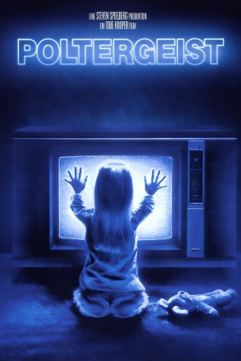

#6822 Poltergeist
Auszeichnungen: für 3 Oscars nominiert 4 BAFTA-Awards gewonnen
 
 IMDB-Wertung: 7.4 / 10
IMDB-Wertung: 7.4 / 10  Tomatometer: 86
Tomatometer: 86  Metascore: 0
Metascore: 0 
Immobilienmakler Steve Freeling zieht mit Gattin Diane und den Kindern Robbie, Dana und Carol Anne ins schmucke Vororthaus der Neubausiedlung Casa Verde. Die Freude weicht dem Entsetzen, als es zu spuken beginnt und Carol Anne Botschaften aus dem Fernseher empfängt. Ein Medium kann nur wenig helfen. Das Haus steht auf einem Friedhof, ist Tor zur Geisterwelt. Als Carol Anne ins Jenseits gezogen wird, holt Ma sie mit einem langen Seil zurück. Die Toten rächen sich und entfesseln einen Sturm von Katastrophen, denen die Familie knapp entkommt.
Jahr: 1982
Dauer: 114 Minuten
FSK: 16
Land: USA Studio: Metro Goldwyn MayerTonspuren: DD2.0 - ,
Untertitel: Deutsch, Englisch,
Auflösung: 1080p (1920x800) Größe: 9502 MB
Genre: Thriller, Horror
Regisseur:  Tobe Hooper,
Tobe Hooper,  Steven Spielberg
Steven Spielberg
Drehbuch: Steven Spielberg
Soundtrack:
Darsteller:
 Craig T. Nelson als Steve Freeling
Craig T. Nelson als Steve Freeling JoBeth Williams als Diane Freeling
JoBeth Williams als Diane Freeling- Beatrice Straight als Dr. Lesh
- Dominique Dunne als Dana Freeling
- Oliver Robins als Robbie Freeling
- Heather O'Rourke als Carol Anne Freeling
 Michael McManus als Ben Tuthill
Michael McManus als Ben Tuthill- Virginia Kiser als Mrs. Tuthill
- Richard Lawson als Ryan
- Zelda Rubinstein als Tangina
 James Karen als Mr. Teague
James Karen als Mr. Teague Dirk Blocker als Jeff Shaw
Dirk Blocker als Jeff Shaw Allan Graf als Sam
Allan Graf als Sam- Joseph Walsh als Joey
 Sonny Landham als Pool Worker #2
Sonny Landham als Pool Worker #2- William Vail als Implosion Man
- Barry Nelson als Actor on Television , uncredited
- Martin Casella als Marty
- Lou Perryman als Pugsley
- Clair E. Leucart als Bulldozer Driver
- Helen Baron als Woman Buyer
- Noel Conlon als Husband
- Robert Broyles als Pool Worker #1
- Jeffrey Bannister als Implosion Man
- Craig Simmons als Implosion Man
- Phil Stone als Football Announcer - NBC Sports
Datei: X:\1982\Poltergeist (1982, FSK16, 1920x800).mkv seit 30.08.2017
Festplatte: HD 1980-1986
 Es gibt insgesamt 31 Filme in der Gruppe '1982'
Es gibt insgesamt 31 Filme in der Gruppe '1982'